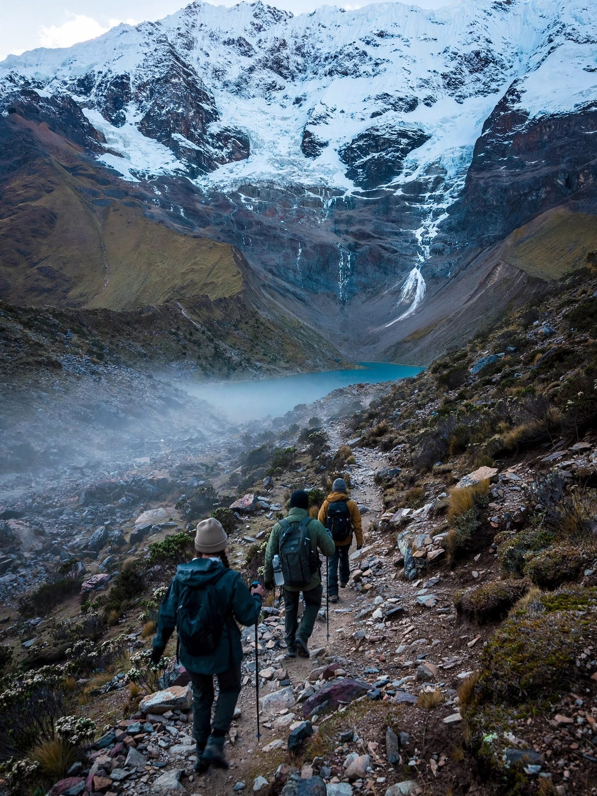

In evidenza · Pensiero
La montagna che ci portiamo dentro
Ci sono luoghi che attraversiamo e luoghi che, dopo averli attraversati, iniziano a vivere dentro di noi. Un racconto sul viaggio, sulla memoria e su ciò che cerchiamo quando partiamo.
Leggi l'articolo →